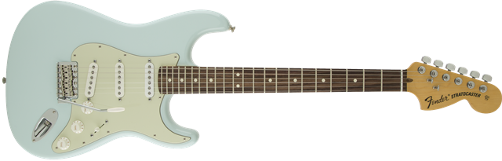

American Special Stratocaster®
Overview
The American Special series Stratocaster® guitar puts genuine U.S-made Fender quality into the hands of players at any level.
Specifications
- Model Name: American Special Stratocaster®, Rosewood Fingerboard, Sonic Blue
- Series: American Special
- Color: Sonic Blue
- Scale Length: 25.5"
- Number of Strings: 6
Detailed Description
Body
Body Shape: Stratocaster®
Body Material: Alder
Body Finish: Gloss Polyurethane
Neck
Neck Material: Maple
Neck Shape: Modern "C"
Scale Length: 25.5" (648 mm)
Fingerboard Radius: 9.5" (241 mm)
Number of Frets: 22
Fret Size: Jumbo
String Nut: Synthetic Bone
Nut Wth: 1.685" (42.8 mm)
Neck Finish: Satin Polyurethane
Fingerboard: Rosewood
Position Inlays: Black Dots on Maple; White Dots on Rosewood
Electronics
Pickups: Texas Special™ Single-Coil Strat
Controls: Master Volume, Tone 1. (Neck Pickup) Greasebucket™ Tone Circuit, (Rolls Off Highs without Adding Bass) Tone 2. (Bridge Pickup), Greasebucket™ Tone Circuit
Pickup Switching: 5-Position Blade: Position 1. Brge Pickup, Position 2. Brge and Mdle Pickup, Position 3. Mdle Pickup,
Position 4. Mdle and Neck Pickup, Position 5. Neck Pickup
| Pickup Selector Switch Position |
Neck Pickup | Middle Pickup | Bridge Pickup | Tone Control in Effect |
|---|---|---|---|---|
| Position 1 | - | - | ON | No Tone Control |
| Position 2 | - | ON | ON | T2 |
| Position 3 | - | ON | - | T2 |
| Position 4 | ON | ON | - | T1&T2 |
| Position 5 | ON | - | - | T1 |
Pickup Configuration: SSS
Hardware
Brge: 6-Saddle Vintage-Style Synchronized Tremolo
Tuning Machines: Fender Standard Cast/Sealed
Orientation: Right-Hand
Pickguard: 3-Ply Mint Green
Control Knobs: Parchment Plastic
Miscellaneous
Strings: Fender® USA, NPS, (.009-.042 Gauges)
Unique Features: Large ‘70s Style Decal, Dual "T"-Roller String Trees
Included Accessories: Polishing Cloth